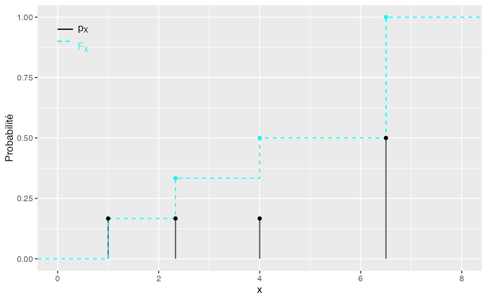
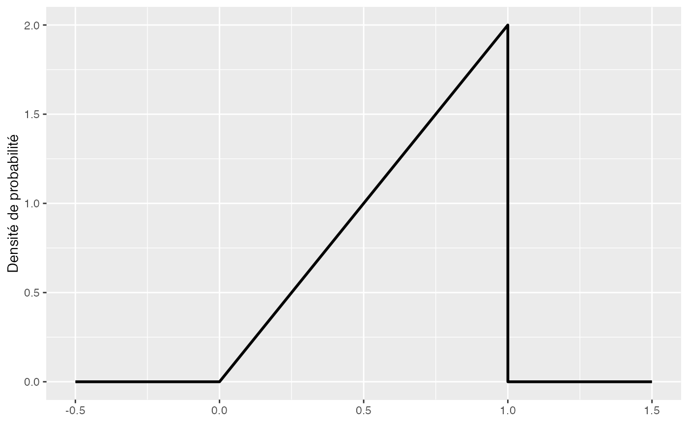
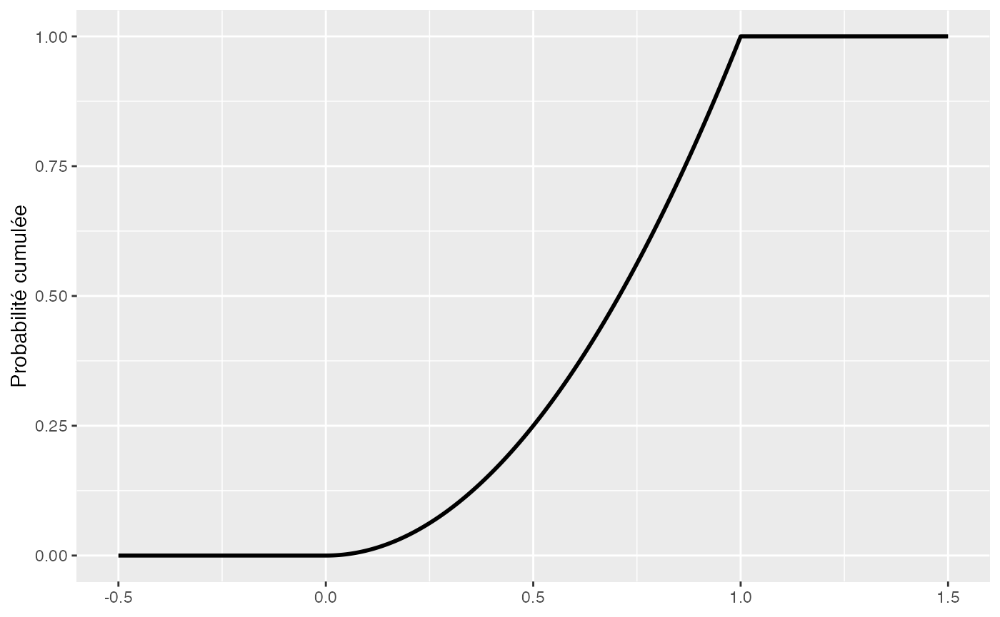

Chapitre 08. Introduction à la théorie des probabilités aux distributions statistiques classiques.
Tout le code avec R.
F. Bertrand et M. Maumy
2021-08-07
Source:vignettes/CodeChap08.Rmd
CodeChap08.Rmd

|
|
if(!("sageR" %in% installed.packages())){install.packages("sageR")}
library(sageR)Exemple fonction de probabilité et fonction de répartition d’une v.a. discrète finie
if(!("spatstat" %in% installed.packages())){install.packages("spatstat")}
library(spatstat)
if(!("ggplot2" %in% installed.packages())){install.packages("ggplot2")}
library(ggplot2)
source("https://raw.githubusercontent.com/NicolasWoloszko/stat_ecdf_weighted/master/stat_ecdf_weighted.R")
xp <- data.frame(cbind(x=c(1,7/3,4,13/2),p=c(1/6,1/6,1/6,1/2),sp=c(1/6,1/3,1/2,1)))
ggplot(aes(x=x),data = xp) + geom_point(aes(y=sp),data = xp,col="#00FFFF") + geom_bar(aes(y=p), width=.025, stat="identity") + xlim(0,8) + ylab("Probabilité") + stat_ecdf(aes(x=x,weight=p),geom = "step",col="#00FFFF", lty=2)+ geom_point(aes(y=p),data = xp)+ annotate("text", x = .5, y = .95,
label = paste(expression(p[X])),
parse=TRUE) + annotate("text", x = .5, y = .875,
label = paste(expression(F[X])),
parse=TRUE,col="#00FFFF") + geom_segment(aes(x = 0, y = .95, xend = .3, yend = .95), data = xp) + geom_segment(aes(x = 0, y = .90, xend = .3, yend = .90), data = xp, col="#00FFFF", lty=2)
#> Warning: Ignoring unknown aesthetics: weight
Exemple fonction de probabilité et fonction de répartition d’une v.a. continue
library(ggplot2)
densx = function(x) return((x>=0)*(x<=1)*2*x)
ggplot() + xlim(-.5, 1.5) + ylim(0, 2) + geom_function(fun = densx, n=10^4, lwd=1)+ ylab("Densité de probabilité")
library(ggplot2)
Frepx = function(x) return((x>=0)*(x<=1)*x^2+(x>=1))
ggplot() + xlim(-.5, 1.5) + ylim(0, 1) + geom_function(fun = Frepx, n=10^4, lwd=1)+ ylab("Probabilité cumulée")